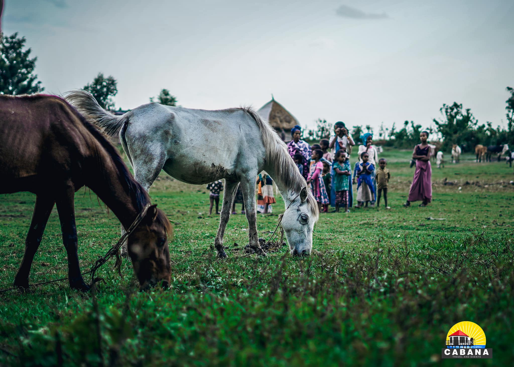
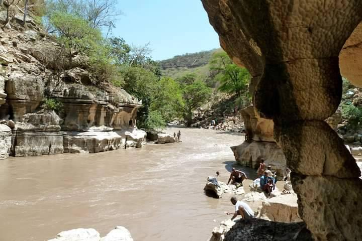
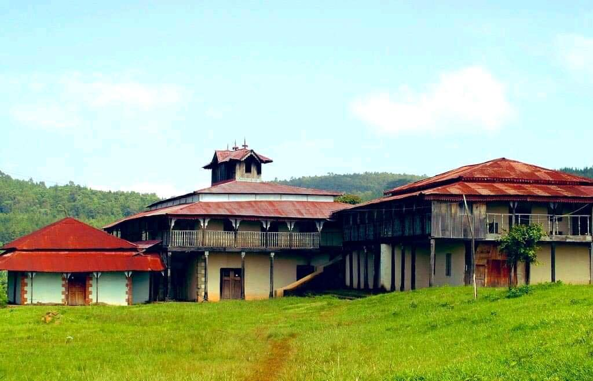

Historic places in Oromia to Visit
Bale Park
 The Bale Mountains National Park (BMNP) is a protected area of
approximately 2,200 km2 and is located 400 km southeast of Addis Ababa
in Oromia National Regional State in south-eastern Ethiopia. It
belongs to the Bale-Arsi massif, which forms the western section of
the south-eastern Ethiopian highlands.
The Bale Mountains National Park (BMNP) is a protected area of
approximately 2,200 km2 and is located 400 km southeast of Addis Ababa
in Oromia National Regional State in south-eastern Ethiopia. It
belongs to the Bale-Arsi massif, which forms the western section of
the south-eastern Ethiopian highlands.
Wanchi Village

Everyone's favorite weekend destination, Wenchi, invites you to spend
some quality time with the crystal clear lake, fragrant woodlands,
charming stallions and the beautiful people in their refreshingly
quiet surroundings.
Dirre Sheik Hussein

Dirre Sheik Hussein is a site of magnificent groups of buildings,
monumental tombs and courts representing early medieval period of
significant engineering qualities.
Abba Jifar Palace

The Palace is the oldest, largest and best preserved surviving example
of traditional wooden architecture in Jimma. It is a fusion of
traditional building technology from south-western Ethiopia and the
Indo-Arab architectural style, which was common in settlements around
the Indian Ocean.